04 衍射与点扩散函数：为什么"点"不是一个点
一句话：光过圆孔必然衍射成"艾里斑"，所以任何点光源在像面上都是一团有形状的光——这就是 PSF；显微镜的笔尖有多粗，分辨率就有多高。
4.1 这一讲讲什么
Jeff Lichtman（Harvard）先用一张封面页点题：波光学与衍射极限。这一讲不教操作，只回答"为什么再好的镜头也看不清 200 nm 以下"。
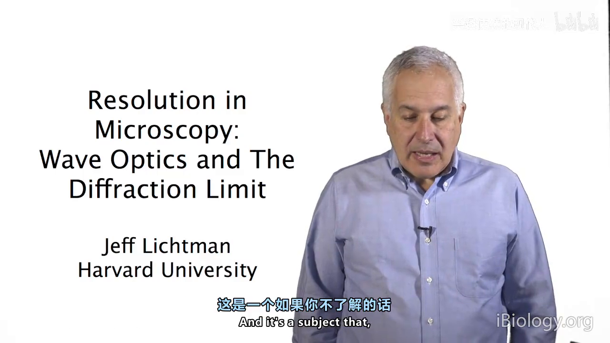
4.2 针孔相机的悖论
孔越大 → 几何模糊越大；孔小到接近波长 → 衍射把光散开，反而更糊。存在一个最佳孔径——这直接反驳了"越小越清楚"的直觉。
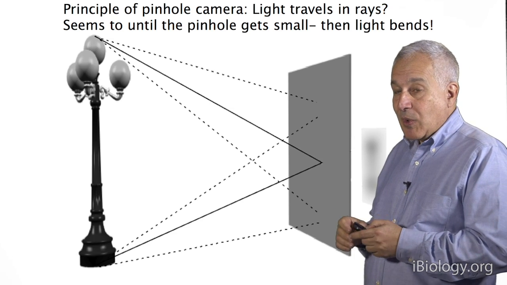
4.3 惠更斯：波前上每一点都是新光源
把波前上的每一点看成子波源，各自发球面波，叠加起来就是新的波前。讲者同时讲了相干叠加：同相振幅相加，相差半个波长完全抵消——这正是艾里斑的环、以及后面共聚焦干涉的共同来源。
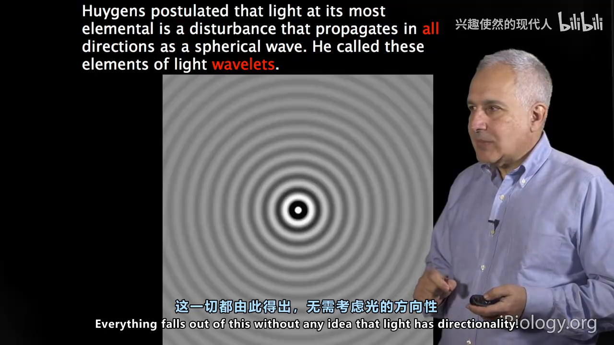
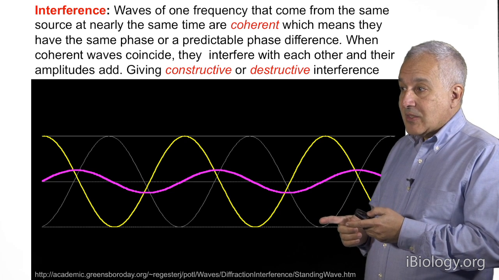
4.4 圆孔 → 艾里斑
点光源经圆孔/物镜后不是一个点，而是中央亮斑 + 一圈圈同心暗环。第一暗环半径：
r = 0.61 λ / NA
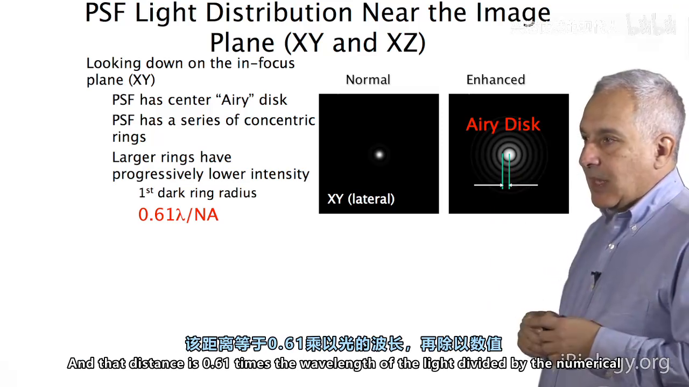
4.5 PSF：显微镜的"笔尖"
把物镜对点光源的响应画成三维，就是一个沙漏形的光分布——xy 面是艾里斑，z 向沿轴拉长：
轴向第一暗点 z = 2nλ / NA²
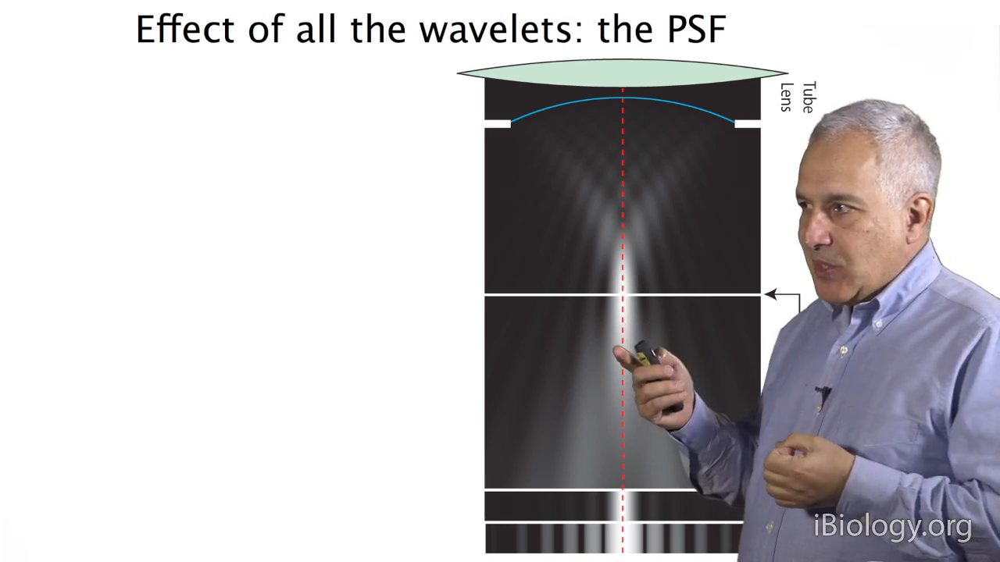
它有多不对称？ NA 1.4、λ 480 nm 时：横向约 225 nm，轴向约 861 nm——胖了将近 4 倍。
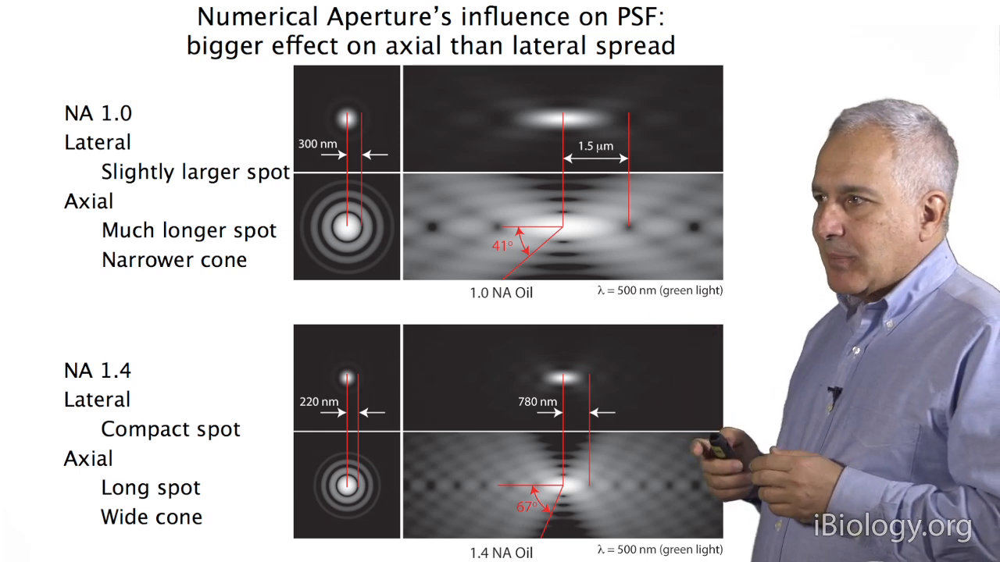
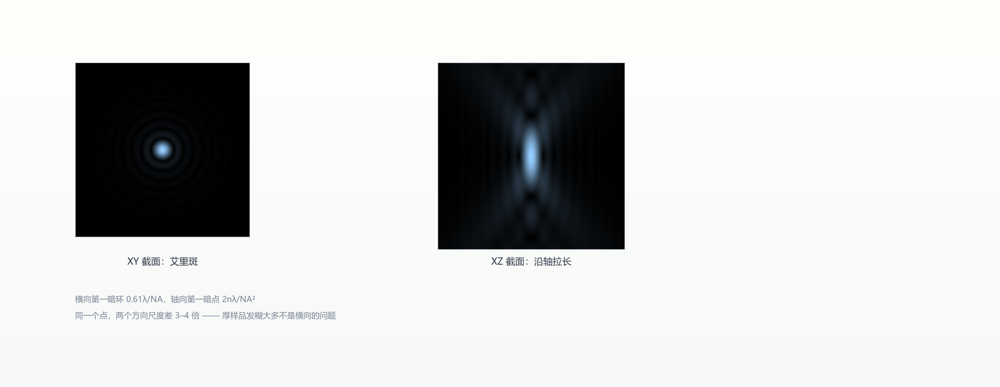
4.6 阿贝成像理论：分辨率 = 收了多少级衍射光
Kurt Thorn 用一个光栅做现场演示：样品把光衍射成 0、±1、±2… 级。
- 收到 ±1 级 → 像面干涉出条纹；
- 只剩 0 级 → 均匀灰场，条纹消失；
- 临界条件 d = λ/(n·sinα) = λ/NA。
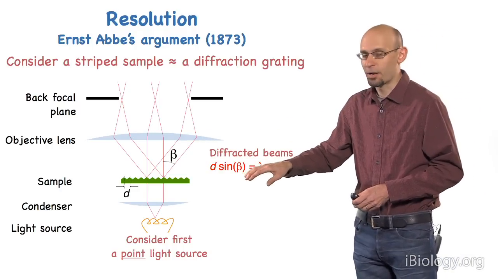
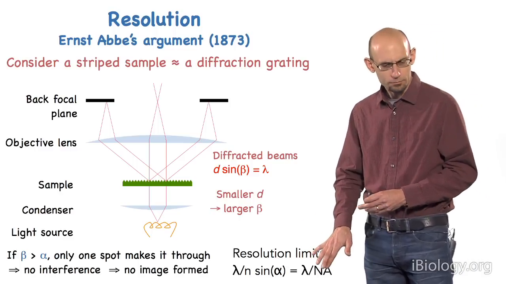
更漂亮的是：物镜后焦面在物理上就是样品的傅里叶变换面，越靠外 = 空间频率越高。在后焦面插一块挡板挡掉某方向的级次，像面就丢掉那个方向的结构。
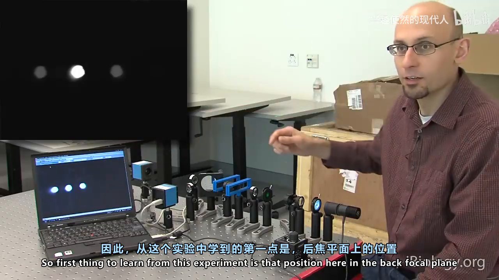
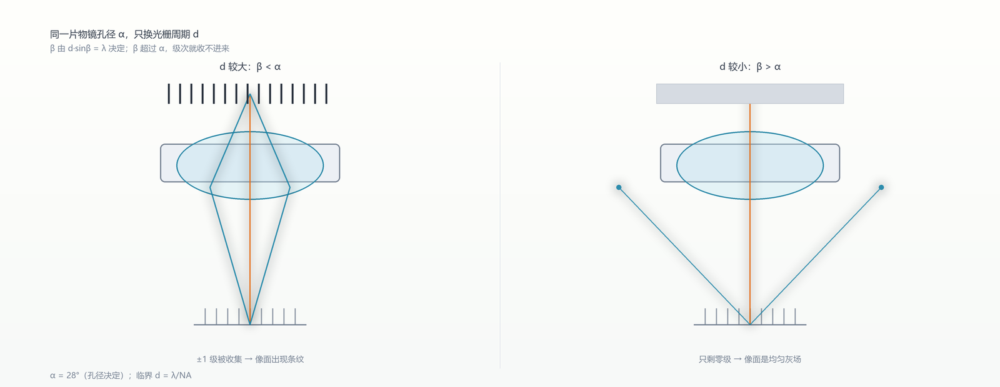
本章自测
- 为什么把 40× 换成 100× 物镜，分辨率不一定提高？什么情况下一定提高？
- NA 1.4、λ=488 nm，横向与轴向的分辨率各约多少？为什么两者差这么多？
- 用阿贝理论解释：为什么缩小孔径光阑会降低分辨率？
回看：P8（25:55）、P9（28:34）、P14（20:21）。